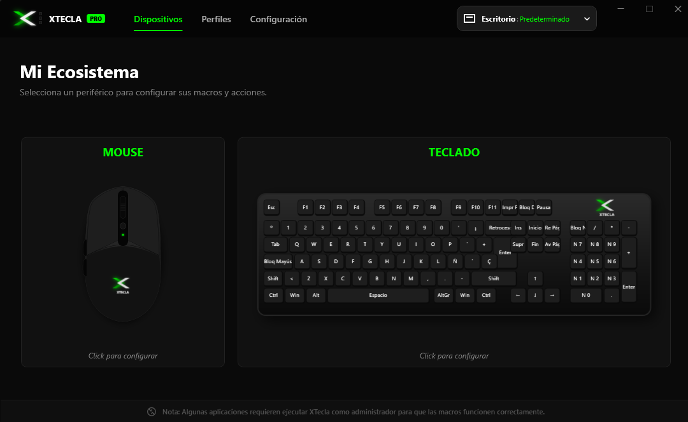
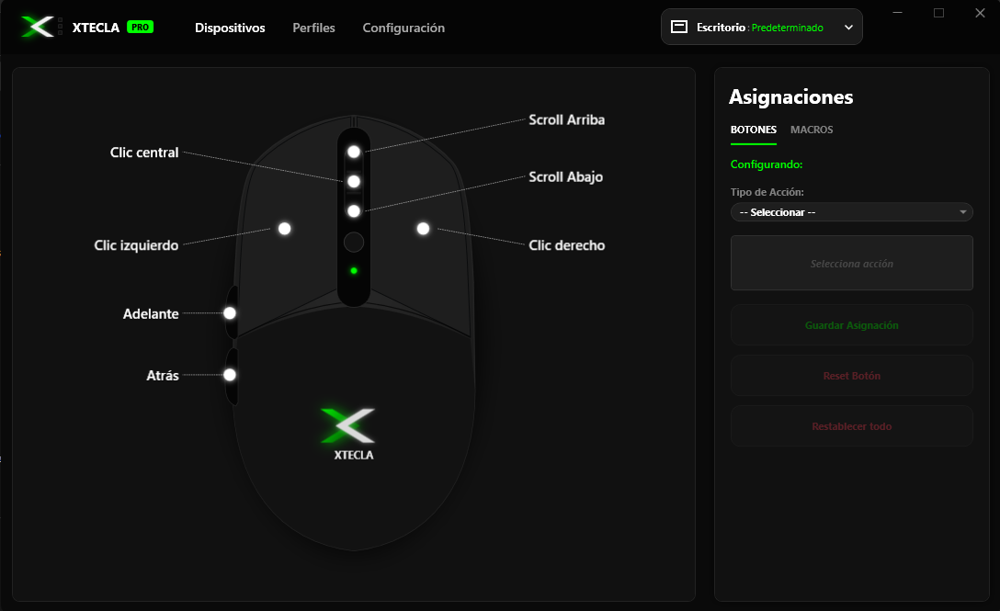
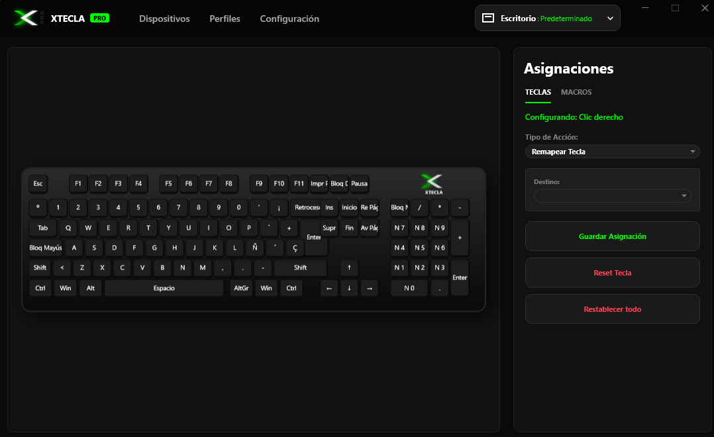
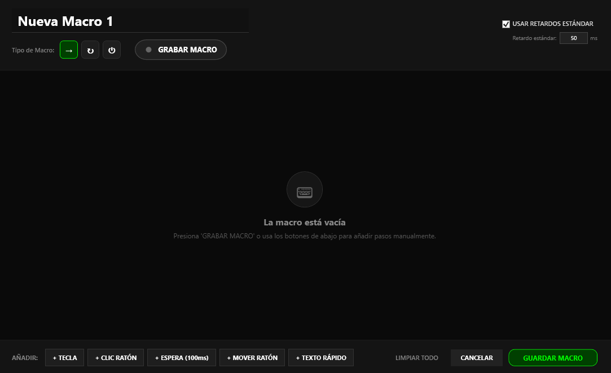
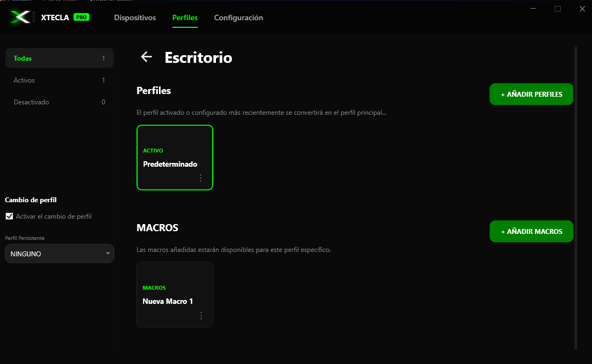
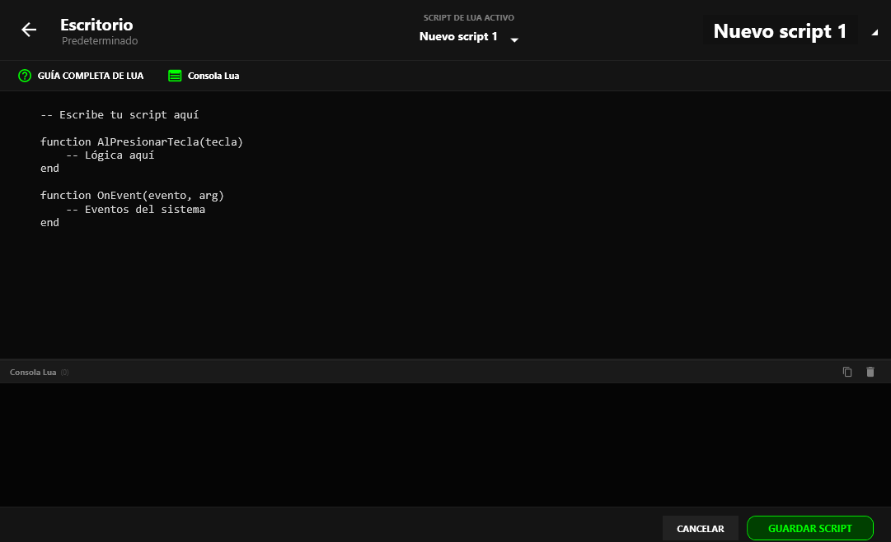
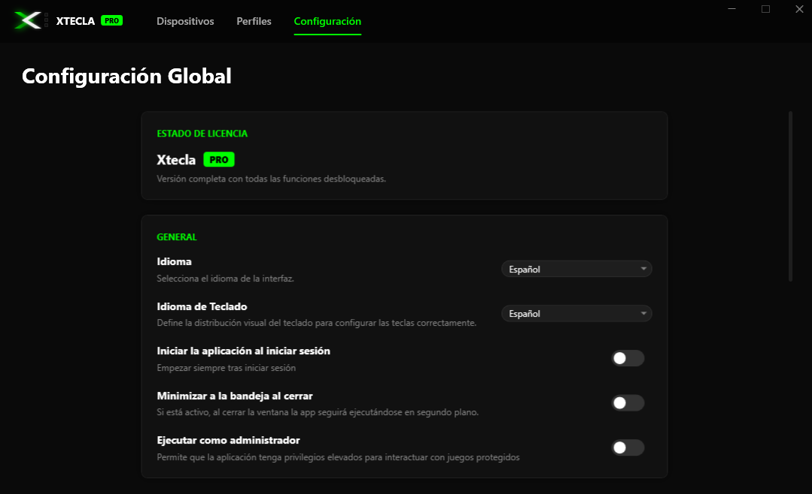

1. ¿Qué es Xtecla?
Xtecla es una aplicación para Windows desarrollada por DAESystemsLabs para optimizar tu productividad y automatizar tareas repetitivas. Te permite configurar botones de mouse y teclado, crear macros con secuencias de pasos precisos, organizar configuraciones mediante perfiles y ejecutar scripts Lua avanzados.

2. Pantalla Dispositivos: Elegir Periférico
La sección principal muestra los dispositivos detectados (mouse y teclado). Hacé clic en la imagen del periférico para abrir su panel de asignaciones detallado.

- Seleccioná el dispositivo detectado en pantalla (mouse o teclado).
- Verificá el entorno activo en la esquina superior derecha (perfil actual).
- Si el dispositivo no aparece, comprobá la conexión USB y asegurate de que Windows lo reconozca correctamente.
3. Asignar Acciones a Botones del Mouse
El panel de configuración del mouse identifica gráficamente el clic izquierdo, clic derecho, clic central, rueda (arriba/abajo) y botones laterales (Adelante/Atrás).

- Elegí el botón físico del mouse que querés reasignar.
- Seleccioná el tipo de acción deseada en el panel desplegable.
- Presioná Guardar Asignación para aplicar los cambios.
Consejo útil: Modificá un botón por vez y probalo en un entorno seguro. Podés usar "Reset Botón" para restablecer una tecla individual o "Restablecer todo" con precaución.
4. Configuración del Teclado
La vista interactiva del teclado permite seleccionar cualquier tecla para cambiar su función o asignarle macros complejas.

- Localizá y seleccioná la tecla deseada (verás la tecla activa resaltada en verde).
- Elegí la acción que querés asignarle (atajo, texto rápido o macro).
- Guardá la asignación y verificala. La distribución visual se ajusta al idioma de teclado configurado en los ajustes generales.
5. Creación y Edición de Macros
Una macro es una secuencia automatizada de pasos que Xtecla ejecuta en orden con gran precisión.

Cómo crear una macro paso a paso:
- Entrá al perfil correspondiente y seleccioná Añadir Macro.
- Asignale un nombre descriptivo.
- Presioná Grabar Macro para registrar tus acciones en tiempo real, o agregá los pasos manualmente:
- + Tecla: incorpora pulsaciones de teclado.
- + Clic ratón: añade clics (izquierdo, derecho, central).
- + Espera: inserta pausas (ej. 100 ms) para dar tiempo a que las aplicaciones respondan.
- + Mover ratón: registra coordenadas o movimientos.
- + Texto rápido: inserta bloques de texto automático.
- Revisá la secuencia en la zona central, ajustá los retardos si es necesario y presioná Guardar Macro.
6. Organización de Perfiles
Los perfiles te permiten agrupar conjuntos de macros y asignaciones para diferentes aplicaciones, juegos o flujos de trabajo.

- Entrá en la sección Perfiles.
- Presioná + Añadir Perfiles y asignale un nombre claro (ej. "Edición de Video" o "Juegos").
- Utilizá + Añadir Macros para vincular las macros que necesites.
- Activá el perfil para comenzar a utilizarlo. Podés configurar perfiles persistentes o habilitar el cambio automático.
7. Scripts Lua (Avanzado)
Para usuarios avanzados, Xtecla incluye un editor de scripts basado en lenguaje Lua para crear lógica personalizada e interactiva.

- Seleccioná + Crear un nuevo script de Lua.
- Escribí o pegá tu código utilizando funciones de eventos como
AlPresionarTecla(tecla)oOnEvent(evento, arg). - Guardá el script y probalo en un entorno controlado.
8. Configuración Global
La pestaña de configuración reúne las preferencias generales de la aplicación y el estado de tu licencia:

- Estado de licencia: Verificá tu activación (ej. Xtecla PRO).
- Idioma e Idioma de teclado: Define la interfaz y la distribución visual de las teclas.
- Iniciar al iniciar sesión: Abre Xtecla automáticamente al encender tu PC.
- Minimizar a la bandeja: Mantiene la aplicación en segundo plano en la barra de tareas.
- Ejecutar como administrador: Otorga privilegios elevados necesarios para interactuar con aplicaciones protegidas.
9. Flujo de Trabajo Recomendado
- Conectá tu periférico y abrí Dispositivos.
- Asigná acciones básicas a los botones principales.
- Crea un perfil específico en la sección Perfiles.
- Diseñá tus macros, grabalas o añádelas paso a paso.
- Guardá todo, activá el perfil y probalo en una aplicación segura.
10. Preguntas Frecuentes y Solución de Problemas
¿La macro no se ejecuta en mi aplicación?
Comprobá que el perfil correcto esté activo, que la macro esté asociada a ese perfil y que los retardos sean suficientes. Si la aplicación requiere privilegios, activá "Ejecutar como administrador" en Configuración.
¿Cómo soluciono una tecla mal asignada?
Seleccioná la tecla o botón afectado y utilizá la opción Reset Botón para volver al estado inicial.
Buenas prácticas recomendadas
Usá nombres descriptivos, realizá pruebas controladas antes de aplicarlo en tareas críticas y recordá guardar los cambios después de cada modificación.